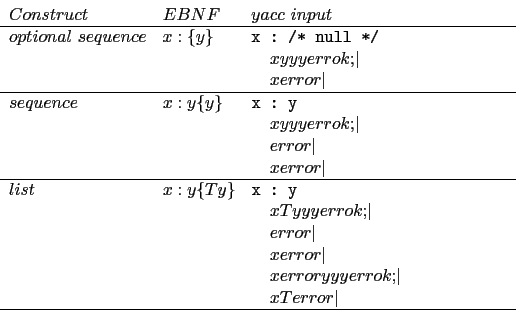

error.y.
En el se muestra el tercer caso x:y{Ty} con
x = list, T = , e y = NUMBER:
%{
#include <stdio.h>
void put(double x);
void err(int code);
%}
%union {
double val;
}
%token <val>NUMBER
%%
command
:
| command list '\n' { yyerrok; }
;
list
: NUMBER { put($1); }
| list ',' NUMBER { put($3); yyerrok; }
| error { err(1); }
| list error { err(2); }
| list error NUMBER { err(3); put($3); yyerrok; }
| list ',' error { err(4); }
;
%%
void put(double x) {
printf("%2.1lf\n",x);
}
void err(int code) {
printf("err %d\n",code);
}
main() {
yydebug = 1;
yyparse();
}
yyerror(char *s) {
printf("%s\n",s);
}
yacc da lugar a una tabla ligeramente diferente
de la producida por bison.
El fichero y.output contiene la tabla:
0 $accept : command $end 1 command : 2 | command list '\n' 3 list : NUMBER 4 | list ',' NUMBER 5 | error 6 | list error 7 | list error NUMBER 8 | list ',' error state 0 $accept : . command $end (0) command : . (1) . reduce 1 command goto 1 state 1 $accept : command . $end (0) command : command . list '\n' (2) $end accept error shift 2 NUMBER shift 3 . error list goto 4 state 2 list : error . (5) . reduce 5 state 3 list : NUMBER . (3) . reduce 3 state 4 command : command list . '\n' (2) list : list . ',' NUMBER (4) list : list . error (6) list : list . error NUMBER (7) list : list . ',' error (8) error shift 5 '\n' shift 6 ',' shift 7 . error state 5 list : list error . (6) list : list error . NUMBER (7) NUMBER shift 8 error reduce 6 '\n' reduce 6 ',' reduce 6 state 6 command : command list '\n' . (2) . reduce 2 state 7 list : list ',' . NUMBER (4) list : list ',' . error (8) error shift 9 NUMBER shift 10 . error state 8 list : list error NUMBER . (7) . reduce 7 state 9 list : list ',' error . (8) . reduce 8 state 10 list : list ',' NUMBER . (4) . reduce 4 5 terminals, 3 nonterminals 9 grammar rules, 11 states
> error
yydebug: state 0, reducing by rule 1 (command :)
yydebug: after reduction, shifting from state 0 to state 1
10 20
yydebug: state 1, reading 257 (NUMBER)
yydebug: state 1, shifting to state 3
yydebug: state 3, reducing by rule 3 (list : NUMBER)
10.0
yydebug: after reduction, shifting from state 1 to state 4
yydebug: state 4, reading 257 (NUMBER)
syntax error
yydebug: state 4, error recovery shifting to state 5
yydebug: state 5, shifting to state 8
yydebug: state 8, reducing by rule 7 (list : list error NUMBER)
err 3
20.0
yydebug: after reduction, shifting from state 1 to state 4
yydebug: state 4, reading 10 ('\n')
yydebug: state 4, shifting to state 6
yydebug: state 6, reducing by rule 2 (command : command list '\n')
yydebug: after reduction, shifting from state 0 to state 1
10;20 30
yydebug: state 1, reading 257 (NUMBER)
yydebug: state 1, shifting to state 3
yydebug: state 3, reducing by rule 3 (list : NUMBER)
10.0
yydebug: after reduction, shifting from state 1 to state 4
yydebug: state 4, reading 59 (illegal-symbol)
syntax error
yydebug: state 4, error recovery shifting to state 5
yydebug: state 5, error recovery discards token 59 (illegal-symbol)
yydebug: state 5, reading 257 (NUMBER)
yydebug: state 5, shifting to state 8
yydebug: state 8, reducing by rule 7 (list : list error NUMBER)
err 3
20.0
yydebug: after reduction, shifting from state 1 to state 4
yydebug: state 4, reading 257 (NUMBER)
syntax error
yydebug: state 4, error recovery shifting to state 5
yydebug: state 5, shifting to state 8
yydebug: state 8, reducing by rule 7 (list : list error NUMBER)
err 3
30.0
yydebug: after reduction, shifting from state 1 to state 4
yydebug: state 4, reading 10 ('\n')
yydebug: state 4, shifting to state 6
yydebug: state 6, reducing by rule 2 (command : command list '\n')
yydebug: after reduction, shifting from state 0 to state 1
3,
yydebug: state 1, reading 257 (NUMBER)
yydebug: state 1, shifting to state 3
yydebug: state 3, reducing by rule 3 (list : NUMBER)
3.0
yydebug: after reduction, shifting from state 1 to state 4
yydebug: state 4, reading 44 (',')
yydebug: state 4, shifting to state 7
yydebug: state 7, reading 10 ('\n')
syntax error
yydebug: state 7, error recovery shifting to state 9
yydebug: state 9, reducing by rule 8 (list : list ',' error)
err 4
yydebug: after reduction, shifting from state 1 to state 4
yydebug: state 4, shifting to state 6
yydebug: state 6, reducing by rule 2 (command : command list '\n')
yydebug: after reduction, shifting from state 0 to state 1
#
yydebug: state 1, reading 35 (illegal-symbol)
syntax error
yydebug: state 1, error recovery shifting to state 2
yydebug: state 2, reducing by rule 5 (list : error)
err 1
yydebug: after reduction, shifting from state 1 to state 4
yydebug: state 4, error recovery discards token 35 (illegal-symbol)
yydebug: state 4, reading 10 ('\n')
yydebug: state 4, shifting to state 6
yydebug: state 6, reducing by rule 2 (command : command list '\n')
yydebug: after reduction, shifting from state 0 to state 1
yydebug: state 1, reading 0 (end-of-file)